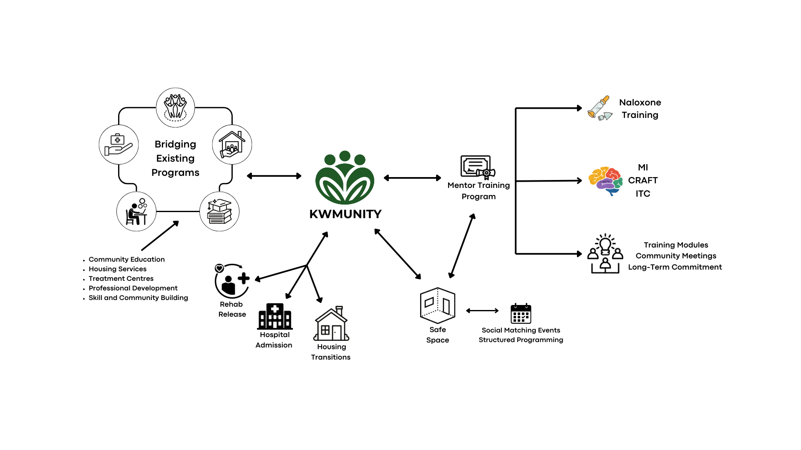
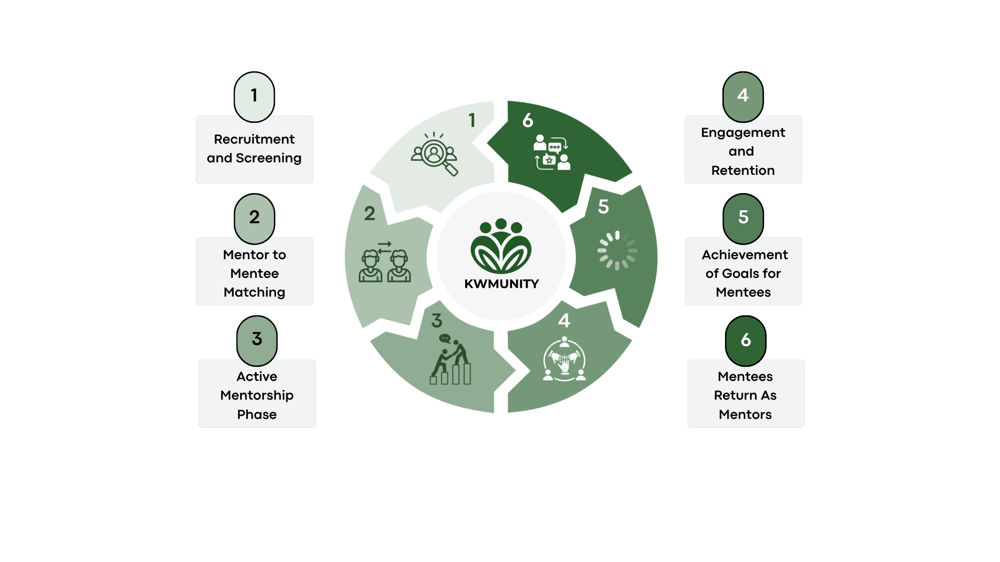

KWMUnity was created in response to the impending closure of 10 out of 12 safe consumption sites in Ontario due to Bill 223. As part of an interdisciplinary capstone course for my Collaborative Design Specialization, I worked with a team to develop a scalable intervention addressing the growing needs of people who use drugs (PWUD) in the Kitchener-Waterloo region. Our solution was to design a peer mentorship program that could offer continuous, non-judgemental support grounded in harm reduction, especially during critical transition periods like hospital discharge or housing changes.
We used a mixed-methods approach grounded in secondary research, stakeholder interviews, and policy analysis. Key literature and stakeholder insights (e.g., from Sanguen Health Centre and the Centre for Motivation and Change) shape the mentorship model. Core design strategies included motivational interviewing (MI), community reinforcement, and peer-based delivery models. Out final outcome was a program roadmap with six-phase implementation strategy, including recruitment, training, matching, and a cyclical model where mentees could become future mentors.

Creative Process
We used a mixed-methods approach grounded in secondary research, stakeholder interviews, and policy analysis. Key literature and stakeholder insights (e.g., from Sanguen Health Centre and the Centre for Motivation and Change) shape the mentorship model. Core design strategies included motivational interviewing (MI), community reinforcement, and peer-based delivery models. Out final outcome was a program roadmap with six-phase implementation strategy, including recruitment, training, matching, and a cyclical model where mentees could become future mentors.

Challenges
- Scoping the project within the time and research constraints of an 8-month school project
- Balancing ambition with feasibility, especially given the complexity of addressing healthcare, stigma, and reintegration at once
- Lack of access to primary data, since piloting with vulnerable populations requires time-intensive ethics approvals
Impacts and Outcomes
- Presented at the Future Cities Institute’s iCapstone Symposium
- Received strong feedback from peers, faculty, and harm reduction professionals
- Developed a full implementation plan, stakeholder map, website, and funding roadmap for turning KWMUnity into a non-profit organization
- Offered a compelling, scalable response to Ontario’s shifting harm reduction landscape
Thank you for reading!
© 2025 Alisha Dey